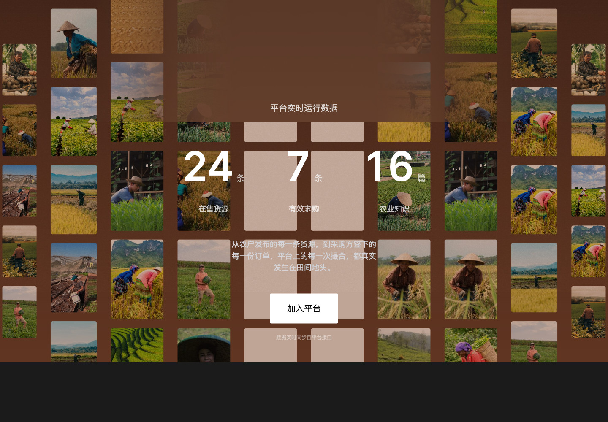
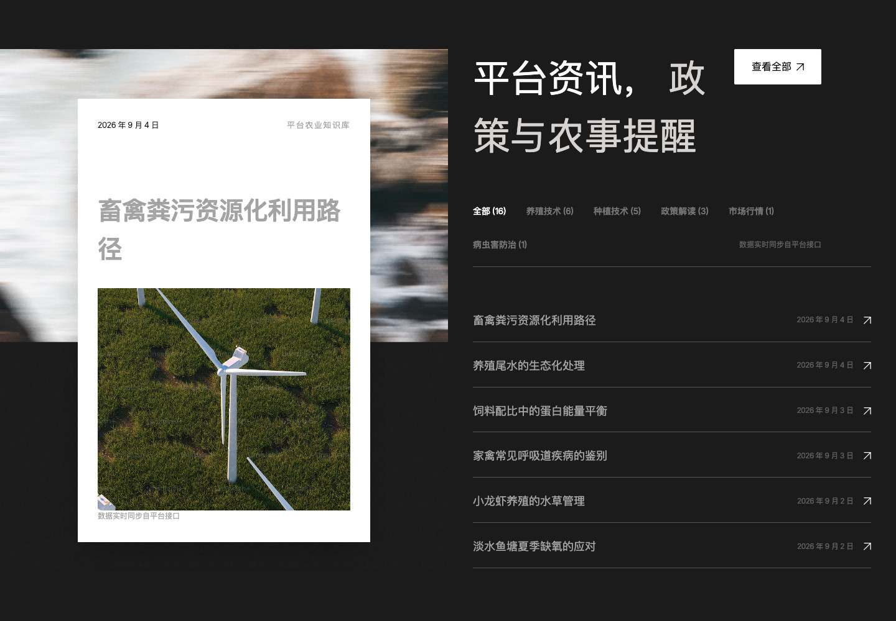
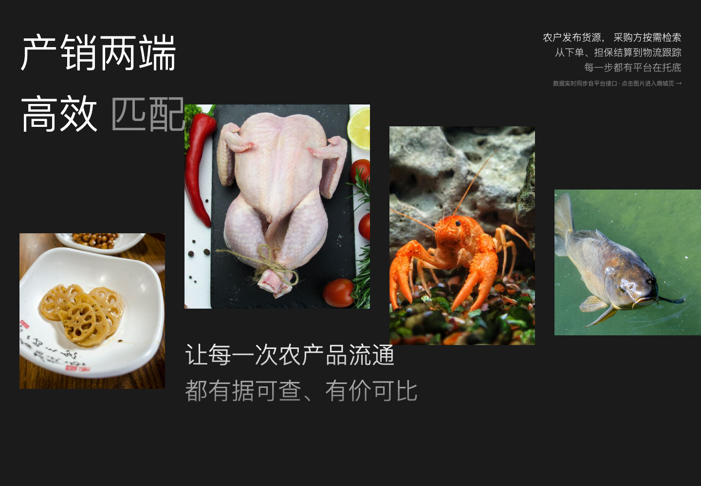
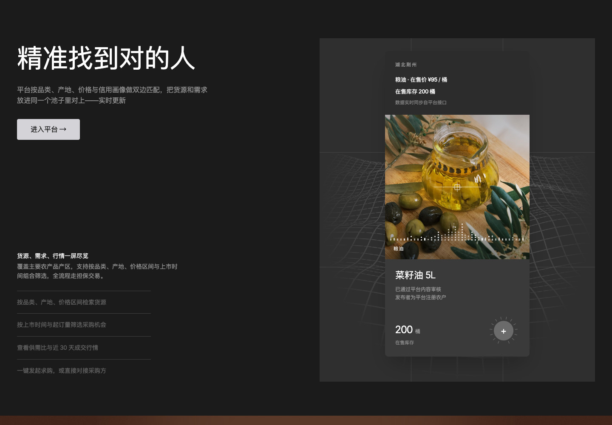
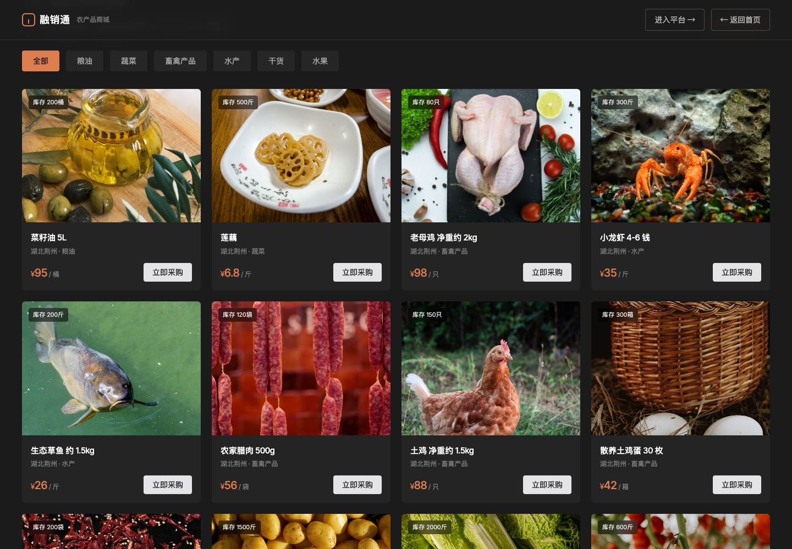
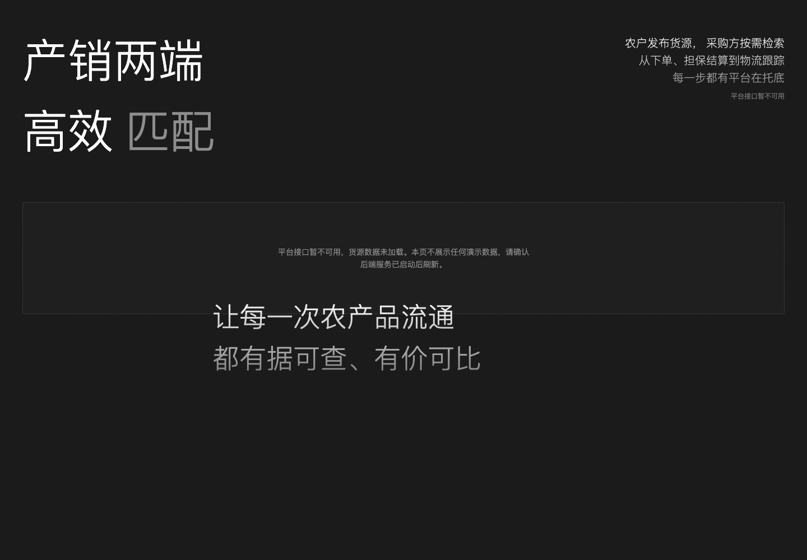
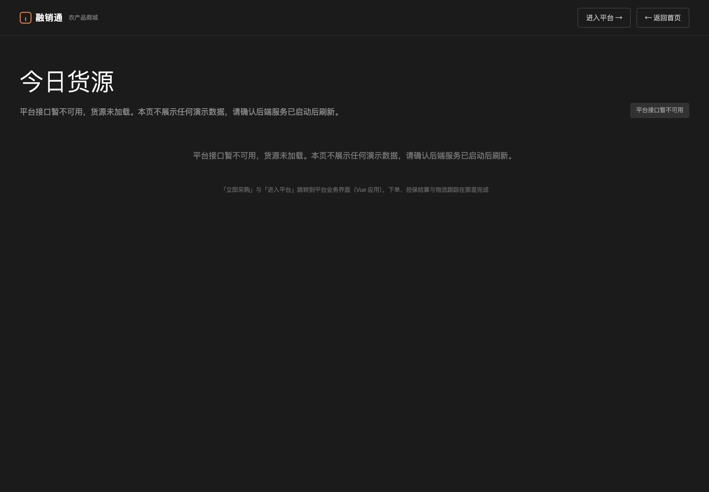
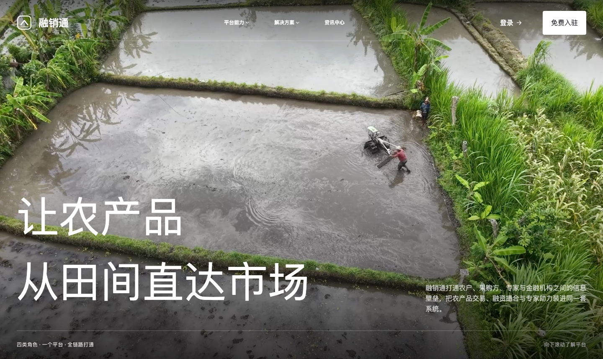
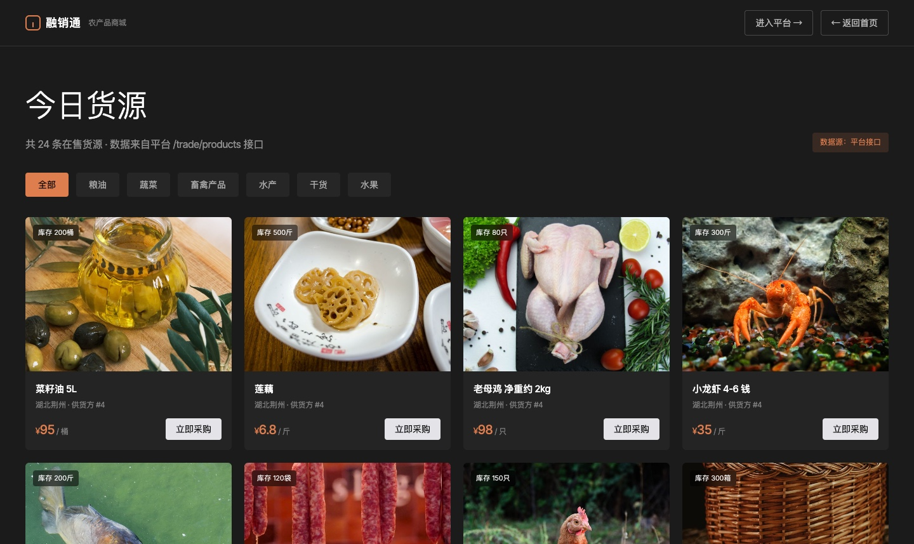

第一轮 2026-09-22：落地页从「纯静态复刻」升级为「接口优先、静态兜底」。
第二轮 2026-10-08：把「静态兜底」整个拿掉 —— 页面上出现的每个商品、每个数字都必须在数据库里查得到，
取不到就显示空态，不再有任何编造内容。
问题不在落地页本身，而在三层叠加：
HomeServiceImpl.listHotProducts() 与 listLatestKnowledge()
仍是 // TODO 待实现，直接 return Collections.emptyList()。
实测 GET /api/home/products 与 /api/home/knowledge 稳定返回 {"code":200,"data":[]}。src/lib/useRemote.ts 写的是「接口优先，静态兜底」——
接口报错或返回空数组时静默保留本地演示数据，source 留在 'demo'。
后端明明是通的，页面却安静地显示假数据：不报错、不提示、控制台干净。| 位置 | 原来（假） | 现在（真） |
|---|---|---|
后端 HomeServiceImpl |
两个方法 TODO 空实现，恒返回 [] |
真实查询：商品 audit_status='已通过' AND status=1 按发布时间倒序；
知识 audit_status='已通过' 按发布时间倒序。命中既有索引，未加新索引 |
后端 GET /home/stats |
不存在。落地页要展示数量只能自己拉列表数一遍 | 新增公开端点：在售货源 / 有效求购 / 已通过知识 及知识分类分布，口径由后端定义一次 |
| §2 商品拼贴 | DEMO_PRODUCTS 6 张演示图，货源不足时补足到 6 格 |
只用 /home/products 的真实货源；槽位不足补「暂无更多在售货源」占位块；一件都没有就整区显示空态 |
| §4 角色卡片 | 「今日均价 ¥3.62」「较昨日 +2.4%」「撮合中 128 笔 · 09:41 更新」 「寿光绿源合作社」「合作农户 46 户 · 认证等级 A」「128 吨在售库存」 |
绑定最新一条真实货源：湖北荆州 / 粮油 · 在售价 ¥95 / 桶 / 在售库存 200 桶 / 菜籽油 5L / 已通过平台内容审核 / 发布者为平台注册农户 |
| §5 统计数字 | animate(0, 3.2) 写死 →「平台已服务 3.2 万农户与合作社」 |
取 /home/stats：24 条在售货源 · 7 条有效求购 · 16 篇农业知识。
数字明显变小，但每一个都能在库里查到 |
| §6 左卡精选 | 写死「2025 年 9 月 22 日 / 融销通研究院 / 农产品流通的数字化路径」 | 绑定最新一条真实知识：2026 年 9 月 4 日 / 平台农业知识库 / 畜禽粪污资源化利用路径 |
| §6 右侧列表 | DEMO_ITEMS 6 条编造的资讯标题 |
/home/knowledge 的 6 条真实知识 + 真实发布时间 |
| §6 品类页签 | 写死「全部 (17) / 政策解读 (7) / 行情周报 (4) / 农事提醒 (6)」 —— 连品类名都和平台的真实分类对不上（平台无「行情周报」「农事提醒」） |
取自 /home/stats：全部 (16) / 养殖技术 (6) / 种植技术 (5) / 政策解读 (3) / 市场行情 (1) / 病虫害防治 (1) |
| /shop 商城页 | 接口不通时回落到 10 张演示卡，含编造的卖家名（赣南果业合作社…）、产地、价格 | 只用 /trade/products 的真实 24 条；接口不通就显示「平台接口暂不可用」，分类按钮从数据推导 |
useRemote.ts |
失败/为空 → 静默保留 fallback，source 停在 'demo' |
三态 loading | ok | error；成功就渲染接口给的数据（哪怕是空数组），失败由调用方渲染失败态 |
「数据源：平台接口 / 本地演示」这排字也随之作废 —— 现在页面上写的是 「数据实时同步自平台接口」或「平台接口暂不可用」，不再有第三种状态。





| 页面区块 | 调用接口 | 实测回显 | 结论 |
|---|---|---|---|
| §2 商品拼贴 | GET /api/home/products?limit=6 | 菜籽油 5L｜莲藕｜老母鸡 净重约 2kg｜小龙虾 4-6 钱｜生态草鱼 约 1.5kg｜农家腊肉 500g （6 张全部 ∈ 接口返回的商品名） |
通过 |
| §4 角色卡片 | GET /api/home/products?limit=1 | 湖北荆州 / 粮油 · 在售价 ¥95 / 桶 / 在售库存 200 桶 / 菜籽油 5L | 通过 |
| §4 四类角色 tab | 纯前端状态切换 + platformUrl() |
找货源 / 找销路 / 找资金 / 找专家 CTA → http://localhost:5173/trade/products |
通过 |
| §5 平台运行数据 | GET /api/home/stats | 24 / 条 在售货源 ｜ 7 / 条 有效求购 ｜ 16 / 篇 农业知识 三项均与接口返回逐值相等 |
通过 |
| §6 平台资讯 | GET /api/home/knowledge?limit=6 GET /api/home/stats |
6 条真实标题 + 真实日期（2026 年 9 月 2—4 日） 页签：全部 (16) / 养殖技术 (6) / 种植技术 (5) / 政策解读 (3) / 市场行情 (1) / 病虫害防治 (1) |
通过 |
| Hero 主视觉 | 本地 1080p 田间视频 + platformUrl() |
/hero-field.mp4 1920×1080 登录 → /login ｜ 免费入驻 → /register |
通过 |
| /shop 商城页 | GET /api/trade/products ?pageNum=1&pageSize=50 |
共 24 条 · 卡片 24 张，卡片名 100% ∈ 接口商品名 分类按钮 7 个 = 全部 + 6 个真实品类 |
通过 |
/home/stats 逐值相等失败路径是把 dev server 的 /api 代理指向死端口 127.0.0.1:1 实测的
（VITE_API_TARGET=http://127.0.0.1:1，实测代理返回 502），
没有停掉机器上任何正在运行的服务。


落地页要展示「已上架货源 / 有效求购 / 农业知识」这类数量，但这些数字都带业务口径 （货源要「已通过审核且上架」、求购要「有效且未过期」、知识要「已通过审核」）。 如果让前端自己拉列表再数一遍，同一句话在落地页、答辩 PPT 和交付文档里就会各算各的。 因此新增一个只读统计端点，口径只定义一次：
| 字段 | 实测值 | 口径 |
|---|---|---|
| productCount | 24 | t_product：audit_status='已通过' AND status=1（表内共 26 行） |
| demandCount | 7 | t_demand：status=1 AND valid_until >= NOW()，与求购大厅同一口径（表内共 8 行） |
| knowledgeCount | 16 | t_knowledge：audit_status='已通过'（表内共 18 行，另 1 条待审核 + 1 条未通过） |
| knowledgeByCategory | 养殖技术 6 / 种植技术 5 / 政策解读 3 / 市场行情 1 / 病虫害防治 1 | 一次 GROUP BY category 聚合，按条数倒序 |
现行 V1.3 的核对基线写的是「66 端点」，新增 GET /home/stats 后变成 67；
同时多了一个 HomeStatisticsVO 类。所以 V1.3 的 §9 与端点清单需要升版（V1.4），
不能只改代码不改文档。否则文档与实现之间就出现了一处静默漂移 —— 这正是这份文档最不该有的东西。
PublicEndpoints白名单里已有 rule(GET, "/home/**")，新端点在 /home/ 之下，
自动落在既有规则里。没有为了「联调方便」新开一格攻击面。
返回值只有 4 个统计量，不含任何用户信息（无手机号、无昵称、无 sellerId）。
后端 24 件货源的 imageUrl 全部为空（农户还没传实拍图），
16 条已通过的知识的 image_url 同样全为空。若按顺序拿素材图顶上，
会出现「老母鸡配苹果图」这类硬伤，因此商品图走四级匹配：
| 优先级 | 规则 | 说明 |
|---|---|---|
| 1 | resolveImage(row.imageUrl) | 后端补上实拍图后自动生效，兜底全部失效 |
| 2 | NAME_PHOTO（去空格精确匹配） | 现有 24 件货源逐一人工对齐实拍图 |
| 3 | KEYWORD_PHOTO（正则，顺序即优先级） | 后端上新货时的兜底；鸡蛋 必须先于 鸡 |
| 4 | CATEGORY_PHOTOS（品类轮取） | 只认得品类时的最后兜底 |
| 5 | null → 中性占位块 | 宁可不放图，也不放错图 |
这一层是「配图素材」，不是数据。商品的名称、价格、产地、库存、上下架/审核状态全部来自接口， 配图只解决「没有实拍图时用哪张同类目照片」。第二轮把相关注释里的「本地演示图」措辞也一并改掉了 —— 它容易被误读成「这些数据是演示的」。
第一轮报告里这一条写的是「HomeServiceImpl 两个方法仍是 TODO 空实现」，
并给了两条修法，「推荐实现 HomeServiceImpl 的两个方法」。
本轮就是按这条推荐做的：两个方法已用真实查询实现，/api/home/products 与
/api/home/knowledge 现在返回真实数据；§2 也因此用上了真正的首页推荐位，
不再需要「空了就改调 /trade/products」这条绕行路径（该绕行函数已删除）。
frontend-web/src/router/index.js 的 beforeEach 只放行
meta.public 的 /login、/register。因此
/trade/products、/expert/knowledge、/finance/apply 等
CTA 对游客会重定向到登录页。
这是平台自己的策略，落地页不做绕行；但演示时要预期到「点立即采购 → 跳到登录页」。 若要给评委看完整链路，先用一个测试账号登录一次再演示。
被删掉的演示数据里有「赣南果业合作社」「寿光绿源合作社」这类卖家名。它们不是随手编的，而是编得没法兑现：
GET /trade/products 返回的 ProductVO 只有 sellerId，没有卖家名称；t_farmer_profile 只有 main_product / scale_desc / credit_record，
整个库里没有「合作社名 / 经营主体名称」这个字段；t_user 有 real_name，但那是账户持有人姓名 ——
把它拼到公开的游客接口上，等于把农户真实姓名挂到公网，是隐私倒退。所以本轮的处理是：落地页不再展示卖家名，商品卡副标题改为真实有的「产地 · 品类」。
如果产品上确实要展示卖家名，需要先定义「经营主体名称」字段并落到
t_farmer_profile（属 M5 农产品交易 / 农户档案，需对应模块负责人确认）。
本轮改的是数据（数字、商品、资讯、卡片字段）。§3/§4 的能力清单属于宣传文案， 不在「假数据」范畴，但确实有几条容易被评委追问：
按上市时间与起订量筛选采购机会 —— 商品接口无这两个筛选参数；查看供需比与近 30 天成交行情 —— 库里没有行情/供需比数据；按销量与复购率挑选优质采购方 —— 没有这类统计；电商运营陪跑，直播带货上手即用 —— 平台无直播能力；全流程走担保交易、银行直连 —— 支付是模拟通道（payOrder 不接真实资金）。建议按「已实现 / 二期」两档重写这一批条目，但这是品牌口径，留给组长定稿，本轮不擅自改。
public/farmers/f01..f20.jpg（Pexels 免费可商用），每 2 秒随机重排。
它不承载任何数量含义（数量已改由 §5 的三个统计承担），但视觉上是一墙人像，
容易被读成「这些是平台用户」。要不要保留、要不要去掉随机重排，属设计口径。imageTower.png，装饰性插图（知识条目在库里没有配图），
alt 已改为「农业知识栏目装饰插图」，不再冒充该条知识的实拍图。Section5.tsx 仍在从 qclay.design 取两张装饰图（Noise.png、
Side-Image-Container.png）—— 答辩环境若不外网会缺这两层纹理，属既有遗留项。本轮的 HomeServiceImpl 是后端改动。如果 :8080 上跑的还是旧进程，
/home/products 与 /home/knowledge 仍会返回 []，
落地页 §2 与 §6 会如实显示「平台当前暂无…」。这不是回归，是空态在正常工作 ——
但演示前一定要拉新代码并重启后端。（重启方式见 backend/README.md）
本轮验收脚本已随代码入库：
verify/scripts/mk-probe-spec.mjs —— 生成测试规格。探针本体写在页面里，
直接在页内 fetch('/api/...') 拿接口数据，再把 DOM 里读到的内容与接口数据逐项比对，
不看截图猜结论；verify/scripts/mk-down-spec.mjs —— 后端不可用路径（代理指向 127.0.0.1:1）。执行（CDP 探针复用 ~/.workbuddy/skills/browser-style-probe/probe.mjs）：
# ① 后端（用自己的端口，别动别人正在跑的 :8080）
cd backend && unset SERVER__PORT SERVER__HOST \
&& mvn -o spring-boot:run -Dspring-boot.run.arguments="--server.port=18080 --server.address=127.0.0.1"
# ② 落地页 dev server（代理指向 ①）
cd frontend-landing && NODE_OPTIONS= VITE_API_TARGET=http://127.0.0.1:18080 \
npx vite --host 127.0.0.1 --port 3010 --strictPort
# ③ 探针（必须带 --enable-unsafe-swiftshader，否则 WebGL 建不出来，WaveGrid 会让整页崩掉）
node verify/scripts/mk-probe-spec.mjs
node ~/.workbuddy/skills/browser-style-probe/probe.mjs /tmp/landing_spec.jsonWaveGrid（three.js，§4 背景）抛
THREE.WebGLRenderer: Error creating WebGL context，整页被 Vite 错误遮罩盖住，
探针读到的所有区块都是空数组（很容易误判成「页面挂了」）。
修法：启动参数加 --enable-unsafe-swiftshader --use-gl=angle --use-angle=swiftshader，
并去掉 --disable-gpu --disable-software-rasterizer --in-process-gpu。whileInView + once:true 的动画，
元素从未真正进入视口 → 全部停在 opacity:0。截图不报错、只是白的。
修法：先 window.scrollTo 滚到目标区并等动画跑完，再拍视口截图，不要用页面坐标 clip。& 起的 dev server 会在 Bash 调用结束时被回收（报
ERR_CONNECTION_REFUSED）。要用后台任务方式启动。
另外 HTTP_PROXY 会被注入，打 127.0.0.1 一律 --noproxy '*' /
NO_PROXY='*'。还有一个容易被当成 bug 的误报：残留特征词检查里不能放 赣南脐橙、
猕猴桃 5 斤装 —— 它们是真实商品名（「赣南脐橙 5kg 装」），
与旧演示数据同名。第一版检查因此报了两条假阳性。
第一轮的结论是「接口优先、静态兜底」：接口通了显示真数据，不通就回落本地演示数据，保证演示时页面不白屏。 当时的 KPI 是「4 个绑定接口的区块 / 2 条实测路径 / 24 条真实货源 / 0 破图」。


| 项目 | 第一轮 2026-09-22 | 第二轮 2026-10-08 |
|---|---|---|
| 接口不通时 | 回落本地演示数据，页面照常好看 | 显示空态 / 失败态，不展示任何编造内容 |
| 接口返回空数组 | 同样视为「没拿到」，静默用演示数据 | 视为「平台确实没有数据」，显示「暂无」 |
| §5 数字 | 写死 3.2 万农户 | 接口实时值 24 / 7 / 16 |
| 后端依赖 | 只需 /trade/products（既有） | 需要 HomeServiceImpl 两个方法与新端点 /home/stats |